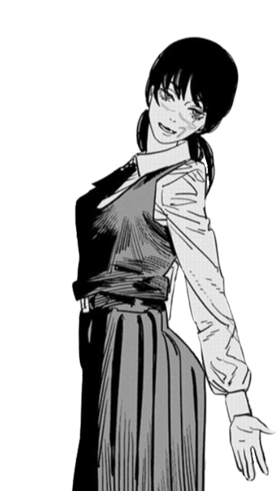
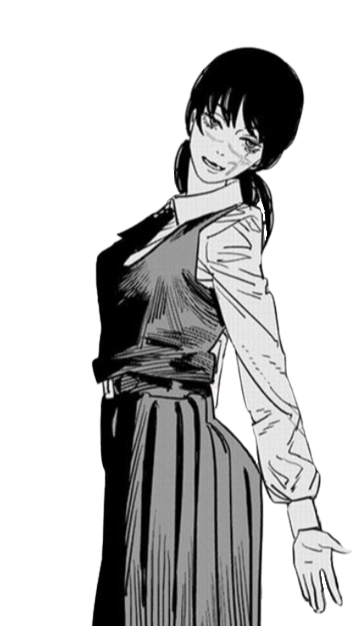

Chainsow Man

Story Chapter1
- Public Safety arc -
Denji is a young man trapped in poverty, working off his deceased father's debt to the yakuza by working as a Devil Hunter, aided by Pochita, his canine companion and Chainsaw Devil. Denji is betrayed by the yakuza, who kill him for a contract with the Zombie Devil. Pochita makes a contract with Denji, merging with him as a human-devil Hybrid, under the condition that Denji shows his dreams to Pochita. Denji then becomes Chainsaw Man when he pulls a ripcord in his chest and massacres the yakuza. In the aftermath, he is approached by a team of governmental Devil Hunters, the Public Safety Division, led by Makima, who convinces him to join their ranks. Charmed by her kindness and looks, Denji joins Public Safety and is partnered with Power, the Blood Fiend, and Aki Hayakawa, a self-destructive Devil Hunter. Makima promises Denji any favor, provided he kill the Gun Devil, perpetrator of the greatest massacre in human history.
Character Chapter1
"If dreams do come true, I wanna hug a girl before I die..."
ーDenj
"I want to use Chainsaw Man... to create a better world."
ーMakima
"I can't kill the Gun Devil alone... I need as many devil hunters with the guts to confront it... as I can get!"ーAki
ーAki
"This deceiver told me to do it! Devils can't lie! Only humans lie! "
ーPower
Story Chapter2
- School arc -
 

Asa Mitaka is an introverted high school student attending Fourth East High School, who has trouble finding her place in society following her mother's death to the Typhoon Devil. One day, after accidentally killing her class' pet Chicken Devil Bucky, she is confronted by the Class President who has made a contract with the Justice Devil. She attempts to kill Asa, but Yoru, the War Devil appears in the form of a bird and makes a contract with Asa, inhabiting her body and making her a living Fiend host, under the condition that she kills Chainsaw Man. After her quick vengeance, Asa seeks to find Chainsaw Man, though she and Yoru have differing goals: Asa wants Yoru to leave her body, while Yoru wants to reclaim the Nuclear Weapons Devil which was consumed by Pochita. They join the school's Devil Hunter Club, where they are partnered with Yoshida (who is revealed to be attending Fourth East) and Yuko, an outgoing student who befriends her.
Character Chapter2

"I wish... I'd tried living just a little more selfishly."
ーAsa
"Just you wait, Chainsaw Man! I'll make you vomit nuclear weapons back up!"
ーYoru
"I'm super into Chainsowman lately!"
ーYuko
"I belong to an organization that's tasked me with keeping eye on you, Denji"
ーYoshida
Author
Tatsuki Fujimoto
Fujimoto was born on October 10, 1992. in Akita Prefecture, Japan.He started drawing at an early age. He had no preparatory schools available near his home, so he went to painting classes in which his grandparents attended and practiced oil painting.In 2011, Fujimoto drew his first submitted one-shot work, Niwa ni wa Niwa Niwatori ga ita ( "There Were Two Chickens in the Garden"), which was nominated for the December Jump SQ. In his first years of high school, he started to upload manga to the website Shintosha.Fujimoto won Honorable Mentions in the November 2013 Shueisha Crown Newcomers' Awards for his debut one-shot story "Love is Blind".In December 2018, he started a new serialization Chainsaw Man in Weekly Shonen Jump. There was an interview where Fujimoto says I like bossy unreasonable girls. Makima is based on Girls that Tatsuki fujimoto likes, "when I was in uni there was a girl that was mean to me. and one of my bike was turned over". Anyway,Fujimoto topped the Kono Manga ga Sugoi! (This manga is great!) critics list for male manga in 2021, he won the 66th Shogakukan Manga Ward for Best Shonen Manga in 2021. He also took home the 2021 Harvey Award for Best Manga. He is a very accomplished manga creator, and isn’t quite 30 yet.
Works
Serialized manga
-Fire Punch(2016–2018) — Serialized in Shōnen Jump+ and published by Shueisha
-Chainsaw Man (2018–present) — Serialized in Weekly Shōnen Jump (2018–2020) and Shōnen Jump+ (2022–present)
One-shots
-Seigi no Mikata ( "Sense of Justice" ) (2013) — Unpublished
-Kami Hikouki ( "Paper Planes" ) (2013) — Unpublished
-Tatsuki Fujimoto Before Chainsaw Man ( "Tatsuki Fujimoto's Short Stories" ) (2021) — Two collected volumes of Fujimoto's earliest one-shots
-Niwa ni wa Niwa Niwatori ga ita ( "There Were Two Chickens in the Garden" ) (2011)
-Sasaki-kun ga Juudan Tometa ( "Sasaki Has Stopped the Bullet" ) (2013)
-Koi wa Moumoku ( "Love is Blind" ) (2013) — Later published in Jump SQ.19
-Shikaku (2014) — Published in Jump SQ.19
-Ningyo Rhapsody ( "Siren Rhapsody" ) (2014) — Published in Jump SQ.19
-Yogen no Nayuta ( "Nayuta of the Prophecy" ) (2015) — Published in Jump Square
-Me ga Sametara Onnanoko ni Natteita Yamai ( "When I Woke Up I Had Become a Girl" Disease" ) (2017) — Published in Shōnen Jump+
-Imōto no Ane ( "Little Sister's Elder Sister" ) (2018) — Published in Jump Square
-Look Back (2021) — Published in Shōnen Jump+ and collected in one volume
-Goodbye, Eri ( Sayonara Eri ) (2022) — Published in Shōnen Jump+ and collected in one volume
-Just Listen to the Song (2022) — Illustrated by Oto Tōda; published in Shōnen Jump+
(Present : January 1, 2023)